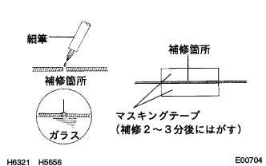

Windglass [print type antenna] correction |
| 1. Windglas [print type antenna] correction |
|  |
Clean the disconnected area with white gasoline.
Stir the repair agent sufficiently, then apply a small amount to a small brush and apply it to the repair location.
If the repair location is long, apply the masking tape and apply the repair agent.
Remove the masking tape after 2-3 minutes.